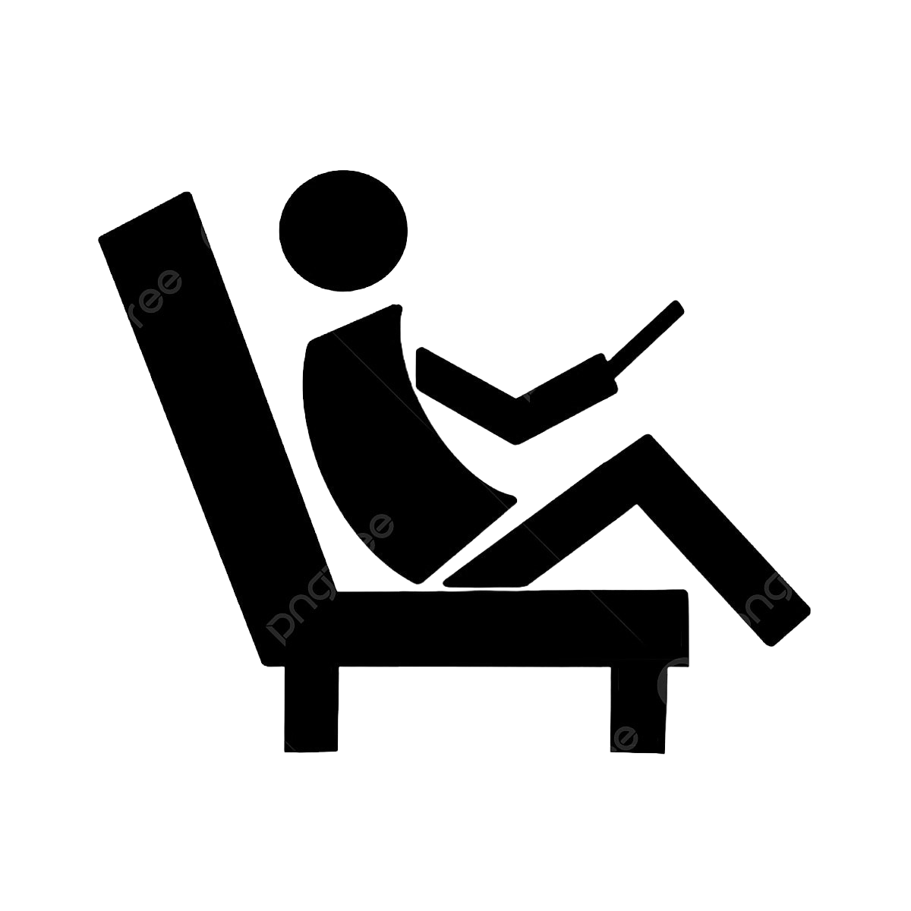
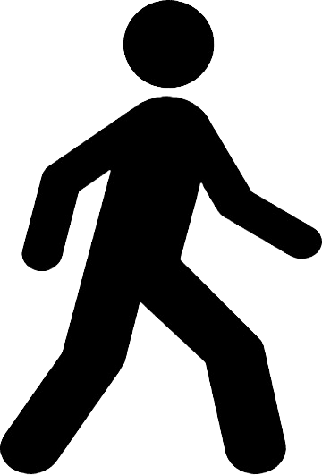

Poco activa: Una persona poco activa tiende a llevar un estilo de vida sedentario.

Moderadamente activa: Una persona moderadamente activa participa en actividades físicas de forma regular, pero no de manera intensiva.
Activa: Una persona activa tiene un estilo de vida que involucra una cantidad significativa de actividad física.

Muy activa: Una persona muy activa se compromete con una intensa actividad física de manera regular.